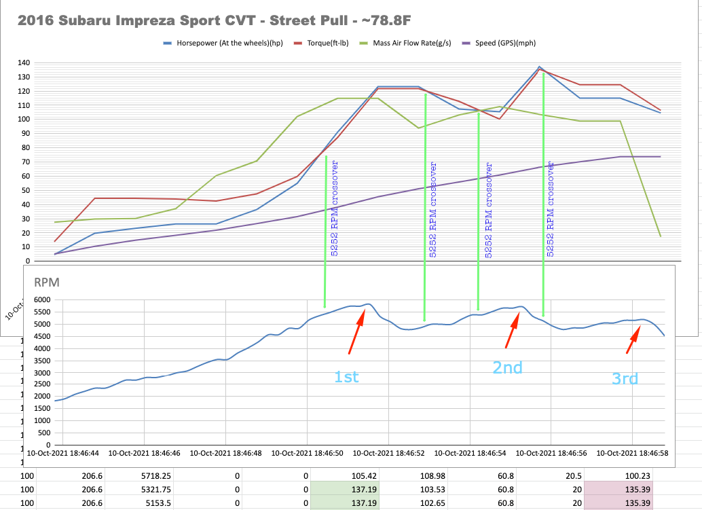

The TR580 is Subaru's "Lineartronic" CVT - Continuously Variable Transmission. It is the little brother to the high-torque TR690 CVT.
The transmissions both use a metal chain and pulley system to vary the drive ratios. There is no gearbox like in a traditional automatic transmission. The TR580 is a newer updated design developed for "reasonable" torque application. It is often mated with FB20 and FB25 series Subaru engines.
The number 580 relates to the length of this case in millimeters. Subarus' . This transmission is categorized as an automatic and so, coupled with a torque converter.
In most cases (non-base models) there is the option to utilize a 6 speed manual shift mode via/ steering wheel paddle shifters. This is your best bet to getting the most out of the engine.
MaintenanceTransmission fluid should be checked/replaced every 30k miles. This can help keep the fluid coupling of the pulley system and valving in good working order. Subaru recommends its own CVT fluid for the TR580 and should not be confused with High-Torque Fluid (orange-red in colour). In my experience, the CVT has performed well in normal driving situations. I had the dealer flush and fill the CVT fluid at 30k.The difference was a smoother, quieter and tighter power deliver. I suspect the original fluid had debris from transmission break-in. I plan on doing another flush at 60k. Performing this maintenance will will help the transmissions longevity.
ReliabilityHeat is the number one enemy of all transmissions. The TR580 is prone to overheating when tasked with holding higher RPMs and heavier work loads for a prolonged period of time.
The OEM CVT makes use of a heater/cooler device (pictured) shaped like a can. It is tied to the coolant system via an water/oil heat exchange. In some cases, during prolonged periods of high load, the heat exchanger system can easily become overloaded. The CVT fluid becomes too hot and trips an electronic "limp mode" which limits engine RPMs to below 4000 and only allows the CVT to run in less taxing gear ratios.
For this reason it is recommended that a CVT cooler (below) be installed anticipating high engine load driving be it mountain passes or spirited canyon driving or hauling. An inline method (utilizes oem cooler) or the bypass method can be used depending on climate zone you live in.
I use a Derale 19 row staked plate cooler, but really any transmission cooler would work. Changing fluid at 30-60k intervals and keeping the transmission cool will help prolong the life of the CVT.
A common issue with the CVT is solenoid failure and has been reported anywhere between 80-300k miles so your mileage may vary. From my understanding this problem arises due to extended CVT use without fluid maintenance. Otherwise the transmission should prove stout enough for the every day commoner.

The Subaru TR580 CVT has some distinct design elements that can be exploited for spirited driving.
The CVT enables a novice to push engine limits more. The CVT has wonderfully natural feeling engine braking curve which can be exploited for almost instant power delivery (more in graph below)
The CVT has an automatic safety check which does not let the engine over rev. This is particularly useful for novice/advanced drivers as there is no possibility going past red line. An example of this safety feature is an auditory beep denoting NO-SHIFT when the driver has requested a ratio shift (downshift with paddles), but the engine is already above 4000rpm. This will help avoid engine failure in the event of a miss-shift.
The CVT has many advantages and safety features that allow novice through advanced drivers to get the most out of the engine and the drivetrain. The electronic active torque split technology straddles economy with drivetrain engagement.

Above is a rather strange looking graph. I call it a CVT dynograph and it is derived from real data. A gear ratio change can provide a huge surge in torque and hp using the variable ratio pulleys. It can produce an interesting looking graph that swings backwards in RPMs. This bump in power to the AWD system is what some people may refer to as CVT Surge. The driver can exploit this feature by maintaining high revolutions before a known acceleration event, for example holeshot and corner exit.
| Gear | Ratio |
| 1st | 3.581:1 |
| 2nd | 2.262:1 |
| 3rd | 1.658:1 |
| 4th | 1.208:1 |
| 5th | 0.885:1 |
| 6th | 0.618:1 |
| Reverse | 3.667:1 |
| Final Drive | 3.700:1 |